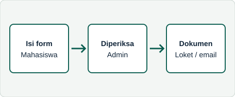

Surat Aktif Kuliah
Bukti bahwa Anda terdaftar sebagai mahasiswa aktif semester ini, untuk beasiswa, tunjangan, atau instansi lain.
Ajukan surat aktif kuliahPortal Layanan Akademik
Universitas Pattimura
Pilih layanan, isi form permohonan, lalu pantau statusnya. Surat biasanya selesai dalam 1–3 hari kerja.
Setiap layanan memiliki estimasi waktu dan syarat yang berbeda.
Bukti bahwa Anda terdaftar sebagai mahasiswa aktif semester ini, untuk beasiswa, tunjangan, atau instansi lain.
Ajukan surat aktif kuliahRekap nilai dan IPK sampai semester berjalan. Tersedia dalam bentuk cetak atau PDF.
Ajukan transkrip sementaraPermohonan berhenti kuliah sementara pada semester tertentu. Wajib disertai alasan yang jelas.
Ajukan cuti akademikPengesahan ijazah atau transkrip salinan oleh pihak fakultas.
Ajukan legalisir dokumen
Kolom bertanda wajib diisi.